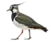
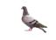
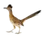
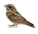
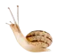
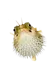

Animal Grimoire
Amphibian 3
Annelid 1
Arachnid 4
Bear 3
Bird 84
- Albatross
 Birds
Birds Blackbirds
Blackbirds Bluebirds
Bluebirds Blue Jays
Blue Jays Canaries
Canaries Cardinals
Cardinals Chickadees
Chickadees Chickens
Chickens- Condors
 Cormorants
Cormorants- Cranes
 Crows
Crows- Cuckoos
 Doves
Doves Ducks
Ducks Eagles
Eagles Egrets
Egrets Falcons
Falcons- Finches
 Flamingos
Flamingos Geese
Geese Goldfinches
Goldfinches Grackles
Grackles Grosbeaks
Grosbeaks Grouses
Grouses Hawks
Hawks Herons
Herons Hoopoes
Hoopoes Hummingbirds
Hummingbirds Ibises
Ibises Jackdaws
Jackdaws Kestrels
Kestrels Kingfishers
Kingfishers Kites
Kites
Lapwings Larks
Larks Loons
Loons- Macaws
 Magpies
Magpies Meadowlarks
Meadowlarks Mockingbirds
Mockingbirds Nighthawks
Nighthawks Nightingales
Nightingales- Nuthatches
 Orioles
Orioles- Ospreys
 Ostriches
Ostriches Owls
Owls- Parakeets
 Parrots
Parrots Partridges
Partridges Peacocks
Peacocks Pelicans
Pelicans- Penguins
 Petrels
Petrels Pheasants
Pheasants
Pigeons Plovers
Plovers Puffins
Puffins- Quails
 Ravens
Ravens
Roadrunners Robins
Robins Rooks
Rooks Roosters
Roosters Sandpipers
Sandpipers Seagulls
Seagulls Snipes
Snipes Sparrows
Sparrows Starlings
Starlings Storks
Storks Swallows
Swallows- Swans
 Swifts
Swifts Thrushes
Thrushes Titmice
Titmice Turkeys
Turkeys Vultures
Vultures Waxwings
Waxwings
Whip-poor-wills Woodpeckers
Woodpeckers Wrens
Wrens Yellow Warblers
Yellow Warblers
Canine 6
Feline 11
Insect 24
Mammal 13
Marine 40
- Abalone Snails
- Angel Wing Clams
- Carps
 Clams
Clams- Cockle Mollusks
 Conch Snails
Conch Snails Cowries
Cowries- Crabs
- Crawfish
 Crustaceans
Crustaceans Dolphins
Dolphins Eels
Eels- Fish
 Goldfish
Goldfish Jellyfish
Jellyfish- Jingle Mollusks
 Lobsters
Lobsters Manatees
Manatees
Mollusks Moon Snails
Moon Snails- Murexes
- Mussels
- Octopus
- Orcas
- Oysters
 Periwinkle Snails
Periwinkle Snails- Porpoises

Pufferfish Salmon
Salmon Sand Dollars
Sand Dollars Scallops
Scallops- Sea Bass
- Sea Horses
- Seals
- Sharks
 Slipper Shells
Slipper Shells Snails
Snails- Triton Snails
- Whales
 Whelk Snails
Whelk Snails